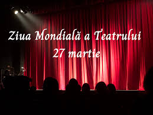

Despre Ziua Teatrului
Ziua Mondială a Teatrului a fost inițiată în 1961 de Institutul Internațional de Teatru ITI. Este sărbătorită anual pe 27 martie de către Centrele ITI și comunitatea internațională de teatru. Pentru a marca această ocazie sunt organizate diverse evenimente de teatru naționale și internaționale. Una dintre cele mai importante dintre acestea este difuzarea Mesajului Zilei Mondiale a Teatrului prin care, la invitația ITI, o figură de talie mondială își împărtășește reflecțiile asupra temei Teatrului și Culturii Păcii. Primul mesaj al Zilei Mondiale a Teatrului a fost scris de Jean Cocteau în 1962. Autorul Mesajul Internațional pentru Ziua Mondială a Teatrului 2024 este Jon Fosse, scriitor şi dramaturg norvegian. Fiecare persoană este unică şi, totuşi, la fel ca oricare altă persoană. Înfăţişarea noastră vizibilă, exterioară este, fireşte, diferită de a oricui altcuiva – până aici, totul e clar –, dar există în acelaşi timp, înăuntrul fiecăruia dintre noi, ceva care aparţine numai şi numai acelei persoane, ceva care este doar acea persoană anume. Putem numi acest ceva spirit; sau suflet. Sau putem decide să nu-l definim prin cuvinte şi să-l lăsăm să existe în linişte. Dar, deşi suntem diferiţi unul de celălalt, totodată suntem şi la fel. Oamenii din orice parte a lumii sunt fundamental asemănători, indiferent de limba pe care o vorbim, indiferent ce culoare de piele sau ce culoare de păr avem. Asta poate fi oarecum paradoxal: faptul că suntem total asemănători şi, în acelaşi timp, complet diferiţi. Poate că fiinţa umană este în mod intrinsec paradoxală, unind în sine trupul şi sufletul – noi reunim cea mai pământească şi mai tangibilă existenţă cu ceva ce transcende aceste limite materiale, terestre. Arta, arta bună, reuşeşte, în felul ei minunat, să combine unicitatea absolută cu universalul. Ea ne face să înţelegem că ceea ce este diferit – ceea ce e străin, am putea spune – este universal. Astfel, arta spulberă graniţele dintre limbi, regiuni geografice, ţări. Ea concentrează nu doar calităţile individuale ale fiecăruia, ci şi, în alt sens, caracteristicile individuale ale fiecărui grup de oameni, de pildă ale fiecărei naţiuni. Şi face asta nu nivelând diferenţele şi reducându-le la un numitor comun, ci, dimpotrivă, arătându-ne ceea ce este diferit de noi, ceea ce e străin sau altfel. Orice artă bună conţine exact asta: ceva străin, ceva ce nu putem înţelege pe de-a-ntregul, dar pe care totuşi, într-un fel, îl înţelegem. Conţine un mister, ca să zic aşa. Ceva ce ne fascinează şi ne împinge dincolo de propriile noastre limite – şi, făcând asta, creează transcendenţa pe care orice artă o conţine şi către care, totodată, ne conduce. Nu cunosc un mod mai bun de a aduce laolaltă contrariile. Este exact inversul a ceea ce fac conflictele violente pe care le vedem prea adesea în lume şi care stimulează tentaţia distructivă de a anihila orice este străin, orice este unic şi diferit, folosind deseori cele mai monstruoase invenţii pe care ni le-a pus la dispoziţie tehnologia. E terorism în lume. E război. Pentru că oamenii au şi o latură animalică, guvernată de instinctul de a-l percepe pe celălalt, pe străin, nu ca pe un mister fascinant, ci ca pe o ameninţare la adresa propriei existenţe. În felul acesta unicitatea – diferenţele pe care le putem vedea cu toţii – dispare, lăsând în urma ei o uniformitate în care orice este diferit devine o ameninţare ce trebuie eradicată. Ceea ce este văzut din afară ca o diferenţă, de pildă în privinţa religiilor sau a ideologiilor politice, devine ceva ce trebuie să fie înfrânt şi nimicit. Războiul este o agresiune împotriva a ceea ce se află în adâncul nostru, al tuturor, împotriva acelui ceva unic. Şi este totodată o agresiune împotriva artei, împotriva a ceea ce se află în adâncul oricărei arte.